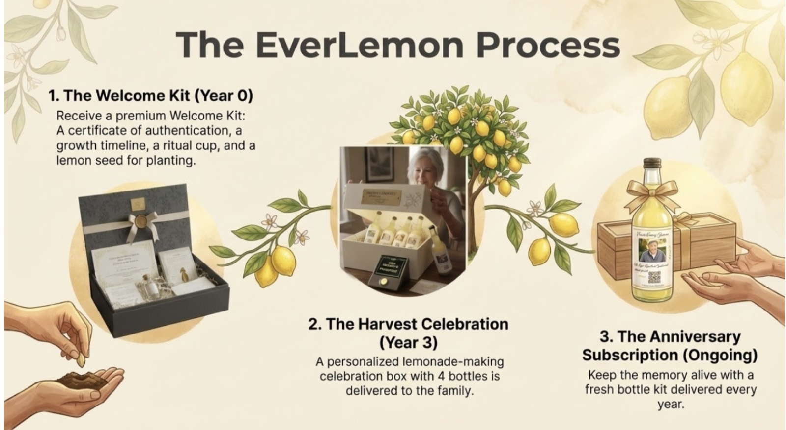
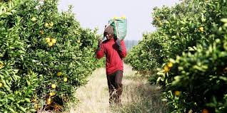

01
Plant
Your family's memorial begins with a lemon tree planted in the orchard. The opening act is simple, physical, and hopeful: a living thing placed in the ground in their name.
The Journey
This is the core of the EverLemon ritual. It starts with a living act in the orchard and gradually becomes a family tradition shaped by time, memory, and care.

A tree is planted in their honour with a partner orchard.
The first chapter arrives in a keepsake-worthy format.
Meaningful touchpoints mark growth without becoming noise.
The fruit becomes the basis for a later family celebration.
How it unfolds
Your family's memorial begins with a lemon tree planted in the orchard. The opening act is simple, physical, and hopeful: a living thing placed in the ground in their name.
The welcome kit introduces the memorial in a tactile, intimate way. It is meant to feel substantial enough to keep, display, revisit, and eventually pass down.
The site and communication rhythm keep the story alive gently. Families are not asked to stay in active grief; they are simply reminded that something is still growing.
Years later, the fruit becomes part of a commemorative lemonade celebration. The ritual resolves not with an object, but with an occasion for people to gather, toast, and tell stories together.

Why the timing matters
EverLemon is not trying to intensify the first week after loss. It is trying to offer something that still has meaning in year two, year three, and the day a family is ready to gather again.
The journey page exists to slow that idea down and make it feel real, so visitors can understand the depth of the promise.
Next page